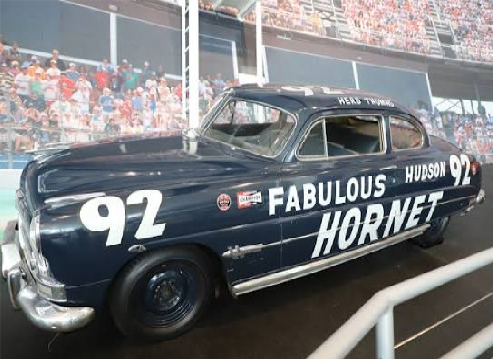
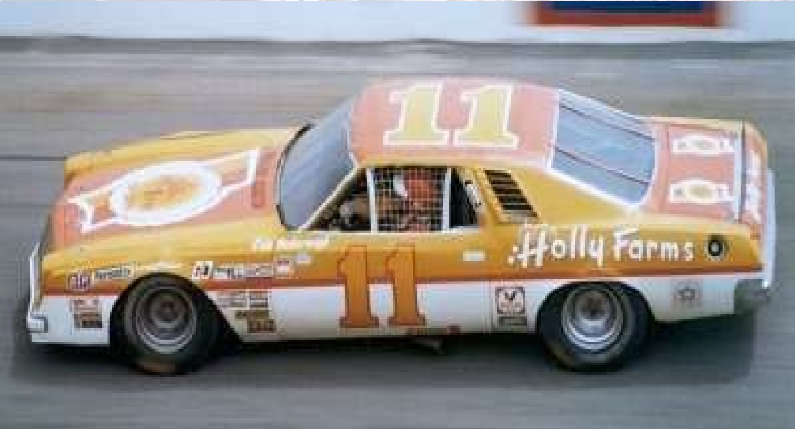
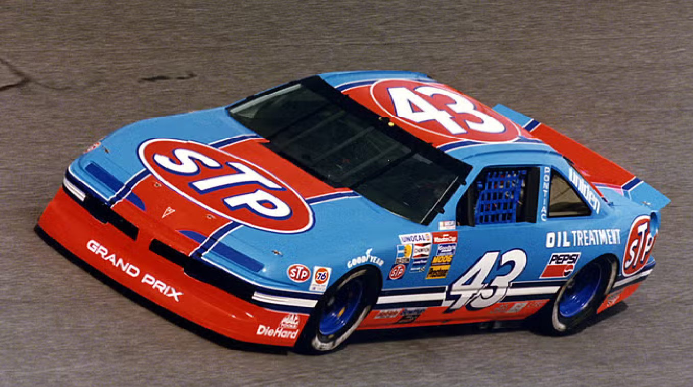
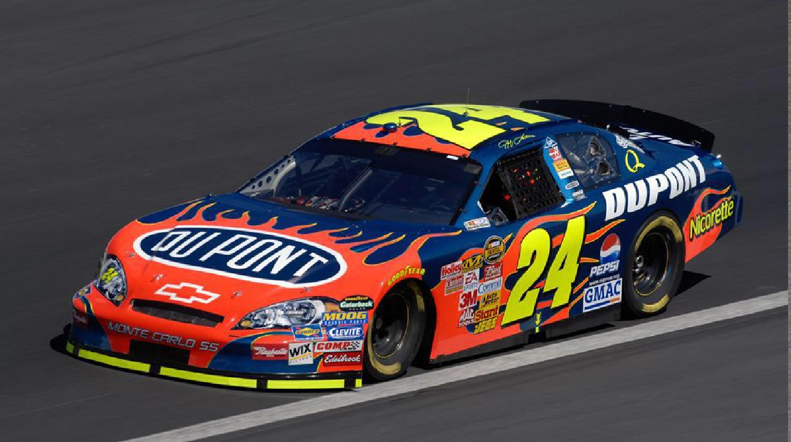
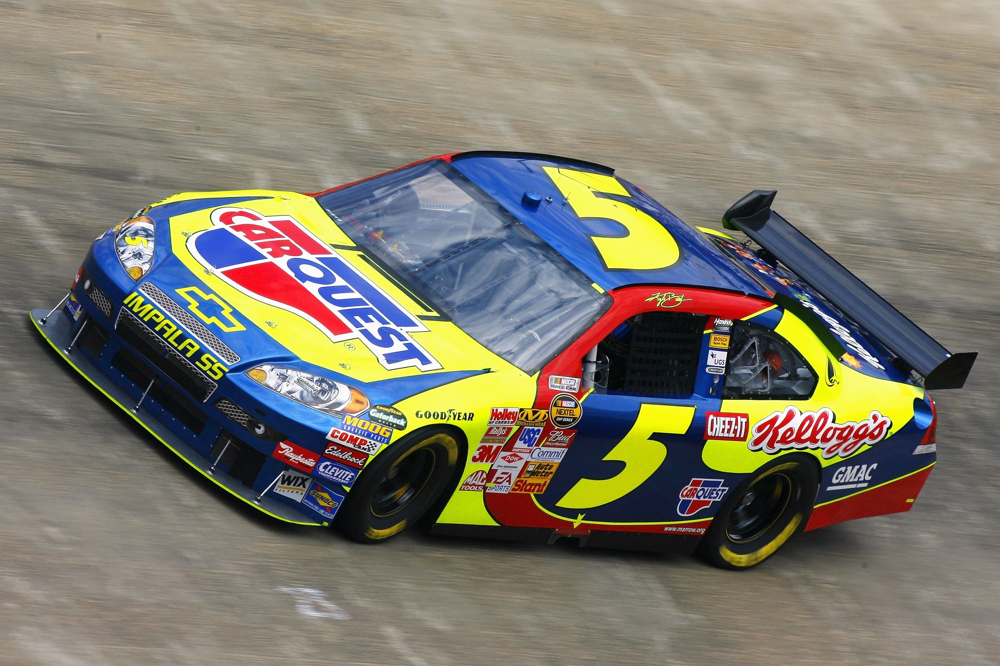
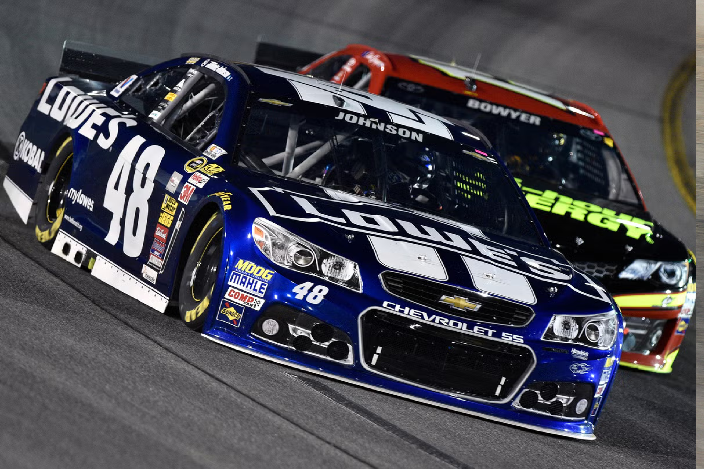
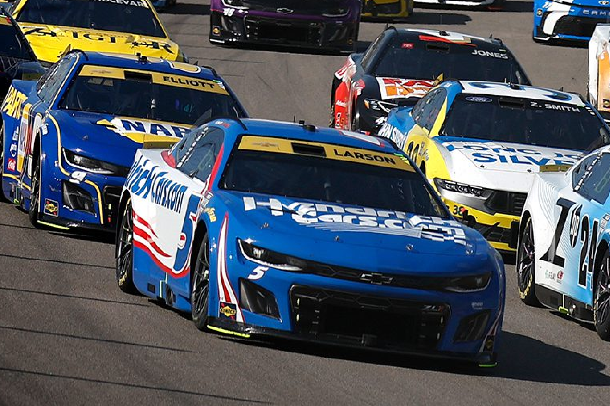

Clima en Pista
Condiciones en tiempo real
🏁
Selecciona una pista
Historia, pilotos, clima, choques icónicos y la evolución de los stock cars.
De las playas de Daytona al mundo entero
Bill France Sr., mecánico y promotor en Daytona Beach, reunió a pilotos y organizadores en el Streamline Hotel el 14 de diciembre de 1947. Estaba cansado de reglas inconsistentes y promotores que se quedaban con el premio. El 21 de febrero de 1948 se incorporó oficialmente la National Association for Stock Car Auto Racing (NASCAR). La primera carrera sancionada la ganó Red Byron en Daytona.
Nace lo que hoy es la NASCAR Cup Series. La primera carrera “Strictly Stock” se disputó el 19 de junio de 1949 en Charlotte Fairgrounds. Jim Roper ganó; Sara Christian fue la primera mujer en competir en la máxima categoría.
Se inaugura el óvalo de 2.5 millas con peralte alto. La primera Daytona 500 convierte a NASCAR en un espectáculo nacional y fija a Daytona como la “capital” del stock car.
Bajo Bill France Jr., NASCAR pasa del sureste a todo el país: patrocinios corporativos, contratos de TV multimillonarios y estrellas como Richard Petty, Dale Earnhardt y Jeff Gordon. Se consolida como uno de los deportes de espectadores más populares de Estados Unidos.
NASCAR deja de ser solo estadounidense y crea series y puentes en otros países:
Hoy NASCAR sanciona más de 1.500 carreras al año en decenas de pistas, con fans en todo el mundo.
Arrastra tus favoritos al Dream Team
Arrastra al menos 2 pilotos para correr
Carrera por probabilidades según wins y poles · animación con autos NASCAR
Condiciones en tiempo real
Selecciona una pista
Momentos que marcaron la historia
Última vuelta. Newman volcó y terminó en llamas. Sobrevivió gracias a la seguridad moderna.

Salió volando hacia la cerca. Después cruzó la meta a pie.

Impacto brutal contra la catch fence. Caminó por su propio pie.

El accidente en cadena típico de Daytona y Talladega a más de 300 km/h.

7 generaciones · Fotos auto1.png a auto7.png en la misma carpeta

Strictly stock: casi idénticos a los de calle. Chasis y carrocería de fábrica, puertas atadas y ejes reforzados. Nace el stock car moderno.

Chasis de competición + carrocería stock. Holman-Moody y Banjo Matthews construyen tubos a medida. Era de Petty, Pearson y Yarborough.

Batalla fija a 110". Se alejan del look de calle: sin puertas reales, spoilers grandes. Bill Elliott supera las 200 mph.

Aerodinámica extrema y fibra de vidrio. Horas en el túnel de viento. Dominio de Jeff Gordon, Dale Earnhardt y Tony Stewart.

Tras accidentes fatales, NASCAR impone chasis común, splitter delantero y alerón trasero alto. Aspecto más “caja”, máxima seguridad.

Vuelta al parecido con autos de calle. Paquetes aerodinámicos por tipo de pista. Era de Jimmie Johnson, Kyle Busch y Kevin Harvick.

Chasis tubular común, caja secuencial de 5 marchas, ruedas de 18" y look de producción. Mejor side-by-side y más adelantamientos.